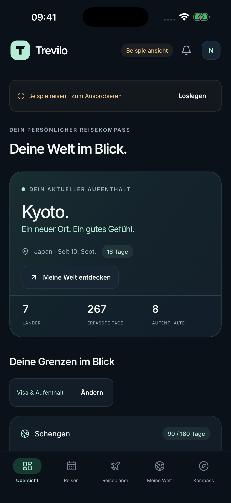

Deine Welt in Tagen.
Reisen mit Land, Ort und Datum festhalten. Kalender, Weltkarte und Länderstatistik zeigen, wo deine Zeit geblieben ist.
Deine Reisen, deine Tage, dein nächstes Abenteuer. Ein ruhiger Ort für alles, was unterwegs zählt.
Für iPhone & iPad · 8 Sprachen · Englisch als Standardsprache · App-Store-Veröffentlichung in Vorbereitung

Vom ersten Eintrag bis zum nächsten Ziel: Deine Reisegeschichte bekommt einen klaren Platz.
Reisen mit Land, Ort und Datum festhalten. Kalender, Weltkarte und Länderstatistik zeigen, wo deine Zeit geblieben ist.
Schengen 90/180, persönliche Steuergrenzen und volle Auslandstage nachvollziehen. Zukunftspläne bleiben getrennt von tatsächlichen Reisen.
Dokumentfristen, Erinnerungen, Checklisten und Belege bündeln. Reiseberichte als PDF und vollständige Sicherungen als JSON exportieren.
Kein Konto. Keine Werbung. Keine Analyse-Tracker. Deine Reiseeinträge werden lokal gespeichert. Standort-, Kalender- und Fotoimporte aktivierst du selbst und prüfst jeden Vorschlag.
So werden deine Daten verarbeitet ↗In der Hilfe findest du Antworten zu Zählern, Importen, Sicherungen und Geräteeinstellungen.
Zur HilfeZähler und Prognosen unterstützen deine Planung. Sie ersetzen keine behördliche Entscheidung oder individuelle Rechts- und Steuerberatung.